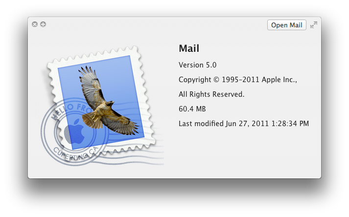
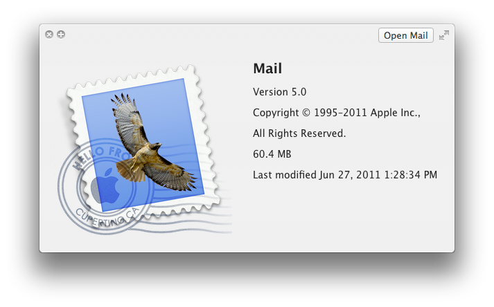

同时用此文参加imeigu的征文，首先发在imeigu: http://my.imeigu.com/5579705651/20416146
另外，arthur369 也写了 Apple产品的美学特征 ──缅怀乔布斯
关于苹果几乎每天都在有人谈及，分析苹果的文章也四处都是，在这里我想写一些不一样的，这些在我看来更接近苹果精神的。这些精神我认为源自乔布斯，在前面的许多年中也只有他能守护，以他那种被八卦周刊们称做”人品差”（其实我很怀疑这只是因为他对记者和媒体太不友好，大家玩命黑他）的那种独裁、固执的方式守护。在苹果公司网站上缅怀乔布斯的文字中，最后一句是”Steve留下了一家唯有他才能创建的企业”，正是如此。
苹果不是奢侈品，这一点经常被误传。当然苹果产品确实不便宜，但考虑其质量，往往是市场上能买到最划算的。苹果并不想做市场上最便宜的产品，价格战是最落后的方式，找到理念相合的用户群，并扩大之，这才是好的竞争方式。这个战略在今天看来非常成功，因为电子产品整体成本下降很多，生产成本也下降很多（感谢中国的世界工厂），而经济比90年代有大幅增长，这让现在的苹果产品看起来更容易接受了。在80年代苹果最糟糕的日子里面，这个策略不成功，x86架构的廉价计算机比精心设计的苹果实在便宜太多了，所以更受欢迎。对比当年，今天看来一台苹果笔记本和其他品牌的价格差距更容易被人们接受，而苹果产品细致美观让人们更接受这点价格差距。
不指望做最便宜的产品，才能做出来好的产品。因为一些努力都有对应的成本，尤其是硬件产品。但对应价格的产品质量必须要足够好。苹果产品关注细节，这些细节可能不会被用户非常直接感受到，但总体上会给人舒服的感觉。人的感官比我们所知道的更精细，一些我们并没有注意到的细节会改变最终感受。这种变态追求细节体现在所有地方，当你放大苹果软件和系统中的图标，通常会能感受到变态的细致。比如Mail程序图标上的邮戳，放大之后可以看到HELLO FROM CUPERTINO CA字样，这是来自苹果总部所在地的问候，放大Java设置的图标，你能看到咖啡杯图标中靠近边缘的气泡，正如我们在现实中的一杯真正的咖啡，放大Document Set图标，会看到那一摞书的书脊上都有书名。就算是在今天，苹果各种理念已经深入人心，在非苹果平台上也很难找到如此精细的产品。而人们平时并不太注意这些精细，只是觉得很舒服。这些成本花费是否有意义？我想答案是确定的，这就是乔布斯挑剔精神的体现。好的产品不应该让人能轻松列出各种好处，而是成为一个整体让人感觉很舒服。对于一个不那么特立独行和偏执的企业，降低成本始终是大事（想想现在的丰田汽车就明白了），能够不再乎成本一心追求产品质量，在这个时代已经是非常不容易。如果不是乔布斯这样偏执而天才的领导人，对于职业经理人来说，恐怕难以下定如此决心，更难获得董事会支持。
 

苹果产品并不完美，甚至有很多功能缺失。经常会有人对我说，你看苹果没有这个功能，没有那个功能。苹果的理念之一就是如果这个功能不能完美解决，那么就干脆砍掉，如果不能完美升级，那么干脆保持原状。这又是一个和传统观念相悖的做法，一般人们会认为”不完善比没有强”，苹果彻底相反，不完善不如干脆没有。这种理念带来的好处是简化了复杂度，复杂度又和时间相关，按照这样的理念，控制功能需求，就可以在固定时间内提供完成度更好的产品。对于现代软件工程和硬件工程，最大的问题是复杂度难以控制，而难以控制的复杂度会导致产品研发周期变长，投入成本不可控，随后在量产过程，售后支持环节都带来更多不可预测的成本支出。做减法简直是必须的，但大家都知道做减法很难。从苹果的历史看来，乔布斯一直擅长做这件事，不仅在产品上，在企业管理上也一样。他回归苹果之后，在很短时间内砍掉大量非核心业务，让公司终于能顺利生存。随后集中精力在iPod，对于一个制造计算机和服务器的公司，专心去做一个MP3播放器，听起来很可笑，当时也有很多人甚至员工认为很可笑。这个MP3也没有什么伟大创新，只是更好用。最终这个产品成功了，随后才有今天的一切。
今天的苹果产品仍然这样，想想iPhone刚刚出世时，人们诟病什么？不能复制粘贴，单任务，不支持”流行的”Flash，不能换电池…，其实到今天还可以随便找出来iPhone一堆缺点。就算这些缺点存在，苹果的产品仍然变得流行，人们喜欢他们，而不太在意这些缺点，因为苹果提供了更重要的东西，大屏幕，多点触摸，传感器，一个真正的浏览器，方便的音乐播放和购买，优美坚固的外形…我们今天回头来看这些诟病，几乎都能揣测出来一些道理，单任务是因为硬件性能不够，无法保证流畅切换任务和并行运行（想想同时代的nokia多任务），不支持Flash是因为太消耗性能，不能换电池是因为增加可换电池仓增加成本和设计难度…能做这样的减法，不仅需要对用户和市场有足够了解，也需要对开发产品团队和供应链有足够了解。否则他怎么能知道什么可以减少，什么可以在未来版本中支持，什么永不妥协，什么必不可少？这些，乔布斯做到了。在功能、成本、时间中的妥协，寻找平衡，这是伟大的艺术。
我更愿意把乔布斯看作艺术家和精神领袖，他不是工程师也不是Geek。苹果从来不用复杂的名词描述产品，苹果的产品系列也很简单。你只需选择笔记本的尺寸，随后就只有高低两种配置，你无需了解手机的CPU，你只需选择存储大一点或小一点。在买苹果产品这件事上，用户只要知道自己想要什么就可以完成，而无需成为专家。在其他领域你可没这么幸运，无论是买计算机，买手机，买汽车买房子装修，在苹果之外的任何产品，你都先要把自己变成专家，然后才能选出来你需要的东西。简单就是美。简单的精神有体现在苹果的各处，无论是使用产品还是使用网站，获得支持还是培训，都很简单。甚至苹果的发布会，开发者会议，演讲者都使用简单的语言。有朋友笑称去参加苹果会议不用怕英语不好，他们用的单词都是初中生也能听懂的。除了少数Geek用户和专业用户，大多数人更愿意使用简单的东西。不仅在硬件上，软件也一样。在苹果系统中，不用考虑硬盘分区，只需按照用途放在对应目录即可，不用创建复杂的层叠目录用来存放文件，只需搜索即可。这种简单同样体现在苹果提供的网站服务上，iTunes Music Store发布于唱片工业和盗版战争最激烈的时代，那时候P2P下载音乐已经非常普及，多数人不太在意音质，他们会下载MP3然后刻成CD放在车上听（中国共享软件的前辈周奕在网上把MP3刻录CD软件卖给美国用户，赚了大钱）。iTunes Music Store提供了简单的界面，购买方式，简单的价格体系和使用规则，一上线就受到欢迎，前18小时卖掉了275,000 首，前5天卖掉1,000,000首，这个成绩证明了只要足够方便简单，用户愿意付钱购买音乐，几年之后他们更是干脆连DRM保护都去掉了（感谢EMI的大胆尝试），最终成就了今天最大的数字影音产品购买市场，这个辉煌延续到了今天的AppStore。在未来iCloud发布之后，你甚至可以把自己下载的MP3通过Match服务，交很少的钱，一次购买版权，这也足够简单吧？我相信多数人愿意花这笔钱。如何让产品变得简单，如何让一般人更容易理解，这是乔布斯擅长的。对比前几天的iPhone 4S发布会Tim Cook的演讲，是否觉得不如以往乔布斯演讲那么通俗易懂？Tim还没能和乔布斯一样驾驭内容，让演讲做沟通一般用户和产品的桥梁，他还需要更多时间。
乔布斯不是技术专家，也不是工程专家，但他有选择好的技术产品的能力。这也是一个卓越公司领导人必备的能力。在离开苹果，创建NeXT那段时期中，他奠定了今天苹果的技术基础。几个重要技术关头，他都选中了最好的产品，比如，操作系统上拥抱UNIX，这样才有之后转向Intel CPU的能力，也有了iOS使用ARM的能力，开发工具使用了Objective-C，当时的潮流是C++，今天在iOS和OS X开发上，我们亲自体验到了采用Objective-C而不是C++的好处，再比如选择在KHTML基础上创建webkit做为浏览器内核，今天移动设备上webkit已经成了浏览器的标准内核，android浏览器也同样基于此。更底层的还有放弃GCC投资LLVM编译器，这样给予开发者更多特性，帮助他们完成质量更高的应用。最重要的系统和开发工具是在距离今天非常遥远90年代初，在乔布斯离开苹果开办NeXT时做出的选择，实在不得不佩服他超越时代的技术判断力与直觉。
如果让我继续写下去，这篇文章还能写非常长。不过我决定就此结束。苹果的精神难以用语言阐述，需要用心体会。我的朋友 @soulhacker在twitter上说 “我对 Steve Jobs 最感恩之处在于他无可辩驳的证明了：特立独行、理想主义、完美主义、执着创新是可以成功的，并用他自己的三段人生经历教给我们如何与实用主义及商业社会良好的妥协”，这是我在这几天见到对苹果精神和乔布斯本人最好的概括。
乔布斯的离去一定会对苹果造成影响，从艺术家乔布斯到供应链专家Tim，领导者角色的变化一定会影响到公司决策。但我相信这不会太坏，乔布斯的精神和气质通过他的产品，文档，技术影响着用户和开发者，对于苹果员工想必更是如此。特别是苹果那些和他一起工作了15年20年以上的核心员工，他们一定能将这些宝贵财富贯彻始终，并使之继续流传。苹果和乔布斯仍然有很多人们不知道的事情，那些想法和决策的产生，如何说服合作伙伴…这些恐怕只有在10月24日发布的乔布斯官方传记中才能得到答案了。
在苹果的世界中，创新远未到终点，苹果在之前很多年投资了很多技术公司，包括这次我们见到的siri，还有传说到未见产品的液体金属 Liquidmetal Technologies ，终有一天，这些技术会足够成熟可用，变成产品到达我们面前，那一刻，我们的生活会再次随之改变，如同苹果宣传资料上最喜欢写的那句”再一次，改变世界”。苹果的疆域扩展也未到终点，我们能看到的领域还有一贯有积累的教育市场，完成了准备工作的企业市场，还有面对客厅的Apple TV。未来还很广阔也足够令人激动，做为开发者或者创业者，我们对乔布斯最好的纪念是记住Be youself，做你喜欢的事，做和其他人不一样的事，改变这个不完美的世界。